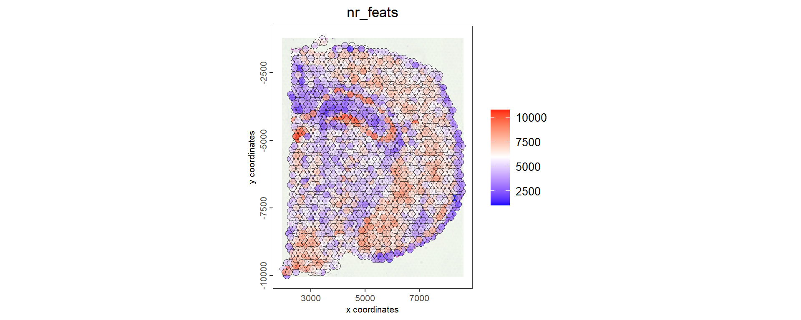
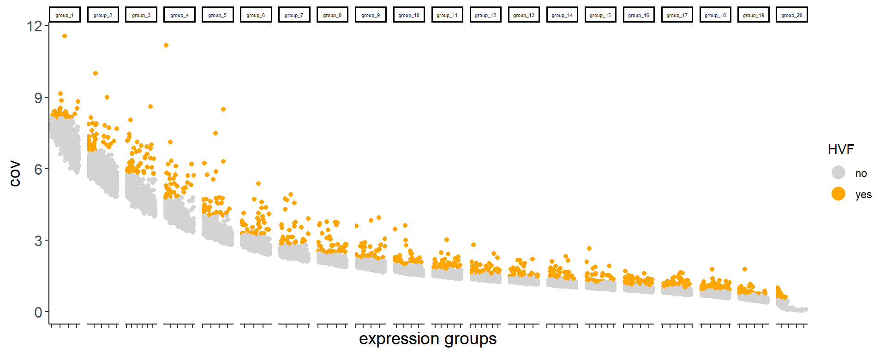

About
Last updated: 2024-07-16
Checks: 7 0
Knit directory: KODAMA-Analysis/
This reproducible R Markdown analysis was created with workflowr (version 1.7.1). The Checks tab describes the reproducibility checks that were applied when the results were created. The Past versions tab lists the development history.
Great! Since the R Markdown file has been committed to the Git repository, you know the exact version of the code that produced these results.
Great job! The global environment was empty. Objects defined in the global environment can affect the analysis in your R Markdown file in unknown ways. For reproduciblity it’s best to always run the code in an empty environment.
The command set.seed(20240618) was run prior to running
the code in the R Markdown file. Setting a seed ensures that any results
that rely on randomness, e.g. subsampling or permutations, are
reproducible.
Great job! Recording the operating system, R version, and package versions is critical for reproducibility.
Nice! There were no cached chunks for this analysis, so you can be confident that you successfully produced the results during this run.
Great job! Using relative paths to the files within your workflowr project makes it easier to run your code on other machines.
Great! You are using Git for version control. Tracking code development and connecting the code version to the results is critical for reproducibility.
The results in this page were generated with repository version 8cc2284. See the Past versions tab to see a history of the changes made to the R Markdown and HTML files.
Note that you need to be careful to ensure that all relevant files for
the analysis have been committed to Git prior to generating the results
(you can use wflow_publish or
wflow_git_commit). workflowr only checks the R Markdown
file, but you know if there are other scripts or data files that it
depends on. Below is the status of the Git repository when the results
were generated:
Ignored files:
Ignored: .Rhistory
Ignored: .Rproj.user/
Untracked files:
Untracked: .gitignore
Unstaged changes:
Deleted: analysis/figure/DLPFC-12.Rmd/unnamed-chunk-10-1.png
Note that any generated files, e.g. HTML, png, CSS, etc., are not included in this status report because it is ok for generated content to have uncommitted changes.
These are the previous versions of the repository in which changes were
made to the R Markdown (analysis/Giotto.Rmd) and HTML
(docs/Giotto.html) files. If you’ve configured a remote Git
repository (see ?wflow_git_remote), click on the hyperlinks
in the table below to view the files as they were in that past version.
| File | Version | Author | Date | Message |
|---|---|---|---|---|
| Rmd | 8cc2284 | Stefano Cacciatore | 2024-07-16 | Start my new project |
| html | 6494c7a | Stefano Cacciatore | 2024-07-16 | Build site. |
| Rmd | 481cada | Stefano Cacciatore | 2024-07-16 | Start my new project |
| html | a4f0a75 | Stefano Cacciatore | 2024-07-16 | Build site. |
| Rmd | 6a64ca2 | Stefano Cacciatore | 2024-07-16 | Start my new project |
| html | ca0df73 | Stefano Cacciatore | 2024-07-16 | Build site. |
| Rmd | 77fe011 | Stefano Cacciatore | 2024-07-16 | Start my new project |
| html | 7be8f59 | tkcaccia | 2024-07-15 | updates |
| Rmd | f8ca54a | tkcaccia | 2024-07-14 | update |
| html | f8ca54a | tkcaccia | 2024-07-14 | update |
| Rmd | 89a11c1 | GitHub | 2024-07-08 | Add files via upload |
| html | 2b5aad7 | GitHub | 2024-07-08 | Add files via upload |
Giotto Visium Brain
Introduction to Giotto Visium Platform
Overview
10X Genomics recently launched the Giotto Visium platform, a cutting-edge tool for acquiring spatial gene expression data using Visium Spatial Gene Expression slides. This innovative technology allows researchers to analyze gene expression patterns while preserving spatial information, which is crucial for understanding the intricate organization and functionality of tissues, especially in complex structures like the brain.
Dataset Description
The data used in this tutorial originates from a Visium Spatial Gene
Expression slide of the adult mouse. This dataset is available on the
10X Genomics support site and can be downloaded from the following link:
V1_Adult_Mouse_Brain.
Ensure that the necessary files are properly organized in the
data_path directory.
Part 1: Setup and Installation
Package Installation
Before proceeding, ensure the required R packages are installed:
# Ensure Giotto Suite is installed
if (!"Giotto" %in% installed.packages()) {
devtools::install_github("drieslab/Giotto@suite")
}
# Ensure GiottoData is installed
if (!"GiottoData" %in% installed.packages()) {
devtools::install_github("drieslab/GiottoData")
}
# Check and install Python environment for Giotto
library(Giotto)
genv_exists <- checkGiottoEnvironment()
if (!genv_exists) {
installGiottoEnvironment() # Run this command once to install Giotto environment
}
# Install additional required packages
if (!"KODAMA" %in% installed.packages()) {
devtools::install_github("tkcaccia/KODAMA")
}
if (!"KODAMAextra" %in% installed.packages()) {
devtools::install_github("tkcaccia/KODAMAextra")
}Part 2: Setup and Installation
Package Installation
Before proceeding, ensure the required R packages are installed:
# Ensure Giotto Suite is installed
if (!"Giotto" %in% installed.packages()) {
devtools::install_github("drieslab/Giotto@suite")
}
# Ensure GiottoData is installed
if (!"GiottoData" %in% installed.packages()) {
devtools::install_github("drieslab/GiottoData")
}
# Check and install Python environment for Giotto
library(Giotto)
genv_exists <- checkGiottoEnvironment()
if (!genv_exists) {
installGiottoEnvironment() # Run this command once to install Giotto environment
}
# Install additional required packages
if (!"KODAMA" %in% installed.packages()) {
devtools::install_github("tkcaccia/KODAMA")
}
if (!"KODAMAextra" %in% installed.packages()) {
devtools::install_github("tkcaccia/KODAMAextra")
}
library(KODAMA)
library(KODAMAextra)
library(Giotto)
library(GiottoData)Part 3: Data Preparation and Analysis
Setting Up the Environment
Set Working Directory and Giotto Instructions
# Set working directory
results_folder <- '../result'
# Create Giotto instructions
my_python_path <- NULL # Use the default Python environment for Giotto
instrs <- createGiottoInstructions(save_dir = results_folder,
save_plot = TRUE,
show_plot = FALSE,
python_path = my_python_path)###Loading and Preparing Data Create Giotto Visium Object
# Provide path to Visium data folder
data_path <- '../DATA/data_path'
# Create Giotto Visium object
visium_brain <- createGiottoVisiumObject(visium_dir = data_path,
expr_data = 'raw',
png_name = 'tissue_lowres_image.png',
gene_column_index = 2,
instructions = instrs)Part 4: Exploratory Data Analysis
Visualizing Data and Quality Control
# Show associated images with Giotto object
showGiottoImageNames(visium_brain)Image type: largeImage
--> Name: image # Check metadata
pDataDT(visium_brain) cell_ID in_tissue array_row array_col
<char> <int> <int> <int>
1: AAACAACGAATAGTTC-1 0 0 16
2: AAACAAGTATCTCCCA-1 1 50 102
3: AAACAATCTACTAGCA-1 1 3 43
4: AAACACCAATAACTGC-1 1 59 19
5: AAACAGAGCGACTCCT-1 1 14 94
---
4988: TTGTTTCACATCCAGG-1 1 58 42
4989: TTGTTTCATTAGTCTA-1 1 60 30
4990: TTGTTTCCATACAACT-1 1 45 27
4991: TTGTTTGTATTACACG-1 0 73 41
4992: TTGTTTGTGTAAATTC-1 1 7 51# Visualize spatial plot
spatPlot2D(gobject = visium_brain, cell_color = 'in_tissue', point_size = 2,
cell_color_code = c('0' = 'lightgrey', '1' = 'blue'),
show_image = TRUE, image_name = 'image', show_plot= TRUE, return_plot = FALSE, save_plot = TRUE)
| Version | Author | Date |
|---|---|---|
| ca0df73 | Stefano Cacciatore | 2024-07-16 |
Part 5: Data Processing and Analysis
Data Filtering and Normalization
# Subset spots covered by tissue
metadata <- pDataDT(visium_brain)
in_tissue_barcodes <- metadata[in_tissue == 1]$cell_ID
visium_brain <- subsetGiotto(visium_brain, cell_ids = in_tissue_barcodes)
# Filter data
visium_brain <- filterGiotto(gobject = visium_brain,
expression_threshold = 1,
feat_det_in_min_cells = 50,
min_det_feats_per_cell = 1000,
expression_values = c('raw'),
verbose = TRUE)
Feature type: rna
Number of cells removed: 4 out of 2702
Number of feats removed: 7311 out of 22125 # Normalize data
visium_brain <- normalizeGiotto(gobject = visium_brain, scalefactor = 6000, verbose = TRUE)
## add gene & cell statistics
visium_brain <- addStatistics(gobject = visium_brain)
## visualize
spatPlot2D(gobject = visium_brain, show_image = T, point_alpha = 0.7,
cell_color = 'nr_feats', color_as_factor = F,save_plot = TRUE, show_plot= TRUE, return_plot = FALSE)
| Version | Author | Date |
|---|---|---|
| ca0df73 | Stefano Cacciatore | 2024-07-16 |
visium_brain <- calculateHVF(gobject = visium_brain, save_plot = TRUE, show_plot= TRUE, return_plot = FALSE)
| Version | Author | Date |
|---|---|---|
| ca0df73 | Stefano Cacciatore | 2024-07-16 |
Part 6: Advanced Analysis and Visualization
Dimensionality Reduction and Clustering
# Perform PCA
gene_metadata <- fDataDT(visium_brain)
featgenes <- gene_metadata[hvf == 'yes' & perc_cells > 3 & mean_expr_det > 0.4]$feat_ID
visium_brain <- runPCA(gobject = visium_brain,
feats_to_use = featgenes)
# Perform KODAMA analysis and visualization
visium_brain <- RunKODAMAmatrix(visium_brain, f.par.pls = 50, FUN = "PLS", n.cores = 4)socket cluster with 4 nodes on host 'localhost'
================================================================================[1] "Finished parallel computation"
[1] "Calculation of dissimilarity matrix..."
================================================================================visium_brain <- RunKODAMAvisualization(visium_brain, method = "UMAP")
visium_brain <- createNearestNetwork(gobject = visium_brain,dim_reduction_to_use = "KODAMA", dim_reduction_name="KODAMA",dimensions_to_use = 1:2, k = 15)
# Perform clustering and visualize results
visium_brain <- doLeidenCluster(gobject = visium_brain, resolution = 0.6, n_iterations = 1000,network_name = "sNN.KODAMA")
spatDimPlot(gobject = visium_brain, dim_reduction_to_use ="KODAMA", dim_reduction_name="KODAMA",cell_color = 'leiden_clus',
dim_point_size = 2, spat_point_size = 2.5, show_plot= TRUE, return_plot = FALSE, save_plot = TRUE)
| Version | Author | Date |
|---|---|---|
| ca0df73 | Stefano Cacciatore | 2024-07-16 |
This tutorial provides a comprehensive guide to using the Giotto Visium platform for spatial gene expression analysis, covering setup, data handling, advanced analysis techniques, and visualization. Each section aims to help you effectively leverage this powerful tool for your research endeavors.
sessionInfo()R version 4.3.3 (2024-02-29 ucrt)
Platform: x86_64-w64-mingw32/x64 (64-bit)
Running under: Windows 10 x64 (build 19045)
Matrix products: default
locale:
[1] LC_COLLATE=English_United States.utf8
[2] LC_CTYPE=English_United States.utf8
[3] LC_MONETARY=English_United States.utf8
[4] LC_NUMERIC=C
[5] LC_TIME=English_United States.utf8
time zone: Africa/Johannesburg
tzcode source: internal
attached base packages:
[1] parallel stats graphics grDevices utils datasets methods
[8] base
other attached packages:
[1] GiottoData_0.2.13 KODAMAextra_1.0 e1071_1.7-14 doParallel_1.0.17
[5] iterators_1.0.14 foreach_1.5.2 KODAMA_3.1 umap_0.2.10.0
[9] Rtsne_0.17 minerva_1.5.10 Giotto_4.0.8 GiottoClass_0.3.1
loaded via a namespace (and not attached):
[1] RColorBrewer_1.1-3 rstudioapi_0.16.0
[3] jsonlite_1.8.8 magrittr_2.0.3
[5] magick_2.8.3 farver_2.1.2
[7] rmarkdown_2.27 fs_1.6.4
[9] zlibbioc_1.48.2 ragg_1.3.2
[11] vctrs_0.6.5 GiottoUtils_0.1.8
[13] RCurl_1.98-1.14 askpass_1.2.0
[15] terra_1.7-78 htmltools_0.5.8.1
[17] S4Arrays_1.2.1 SparseArray_1.2.4
[19] parallelly_1.37.1 sass_0.4.9
[21] bslib_0.7.0 htmlwidgets_1.6.4
[23] plyr_1.8.9 plotly_4.10.4
[25] cachem_1.1.0 whisker_0.4.1
[27] igraph_2.0.3 lifecycle_1.0.4
[29] pkgconfig_2.0.3 rsvd_1.0.5
[31] Matrix_1.6-5 R6_2.5.1
[33] fastmap_1.2.0 future_1.33.2
[35] GenomeInfoDbData_1.2.11 MatrixGenerics_1.14.0
[37] digest_0.6.36 colorspace_2.1-0
[39] S4Vectors_0.40.2 rprojroot_2.0.4
[41] irlba_2.3.5.1 RSpectra_0.16-1
[43] textshaping_0.4.0 GenomicRanges_1.54.1
[45] beachmat_2.18.1 labeling_0.4.3
[47] fansi_1.0.6 httr_1.4.7
[49] abind_1.4-5 compiler_4.3.3
[51] proxy_0.4-27 withr_3.0.0
[53] backports_1.5.0 BiocParallel_1.36.0
[55] highr_0.11 R.utils_2.12.3
[57] openssl_2.2.0 rappdirs_0.3.3
[59] DelayedArray_0.28.0 rjson_0.2.21
[61] gtools_3.9.5 GiottoVisuals_0.2.3
[63] tools_4.3.3 httpuv_1.6.15
[65] future.apply_1.11.2 R.oo_1.26.0
[67] glue_1.7.0 dbscan_1.2-0
[69] promises_1.3.0 grid_4.3.3
[71] checkmate_2.3.1 reshape2_1.4.4
[73] snow_0.4-4 generics_0.1.3
[75] gtable_0.3.5 R.methodsS3_1.8.2
[77] class_7.3-22 tidyr_1.3.1
[79] data.table_1.15.4 ScaledMatrix_1.10.0
[81] BiocSingular_1.18.0 sp_2.1-4
[83] utf8_1.2.4 XVector_0.42.0
[85] BiocGenerics_0.48.1 ggrepel_0.9.5
[87] pillar_1.9.0 stringr_1.5.1
[89] later_1.3.2 dplyr_1.1.4
[91] lattice_0.22-6 deldir_2.0-4
[93] tidyselect_1.2.1 SingleCellExperiment_1.24.0
[95] knitr_1.48 git2r_0.33.0
[97] IRanges_2.36.0 SummarizedExperiment_1.32.0
[99] scattermore_1.2 stats4_4.3.3
[101] xfun_0.45 Biobase_2.62.0
[103] matrixStats_1.3.0 stringi_1.8.4
[105] workflowr_1.7.1 lazyeval_0.2.2
[107] yaml_2.3.8 evaluate_0.24.0
[109] codetools_0.2-20 tibble_3.2.1
[111] colorRamp2_0.1.0 cli_3.6.2
[113] reticulate_1.38.0 systemfonts_1.1.0
[115] munsell_0.5.1 jquerylib_0.1.4
[117] Rcpp_1.0.12 GenomeInfoDb_1.38.8
[119] doSNOW_1.0.20 globals_0.16.3
[121] png_0.1-8 ggplot2_3.5.1
[123] bitops_1.0-7 listenv_0.9.1
[125] SpatialExperiment_1.12.0 viridisLite_0.4.2
[127] scales_1.3.0 purrr_1.0.2
[129] crayon_1.5.3 rlang_1.1.4
[131] cowplot_1.1.3